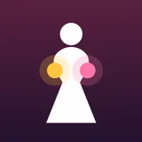
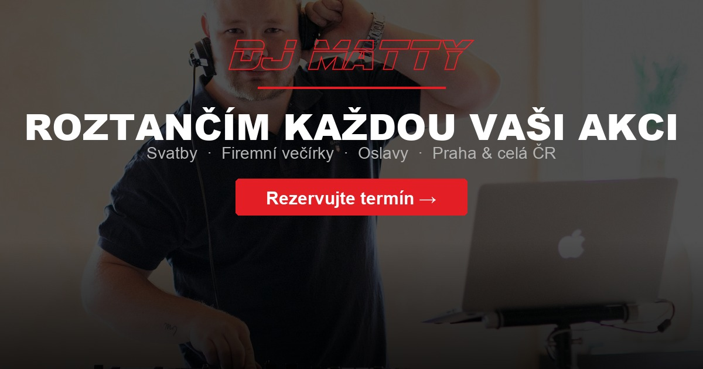
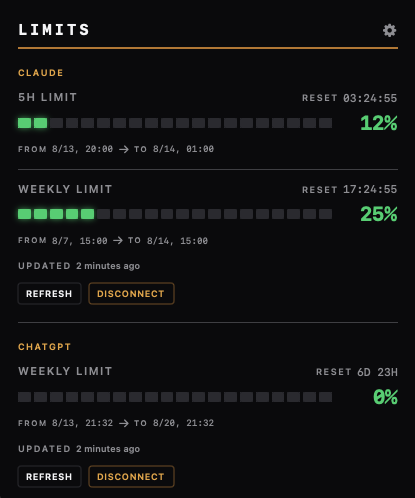
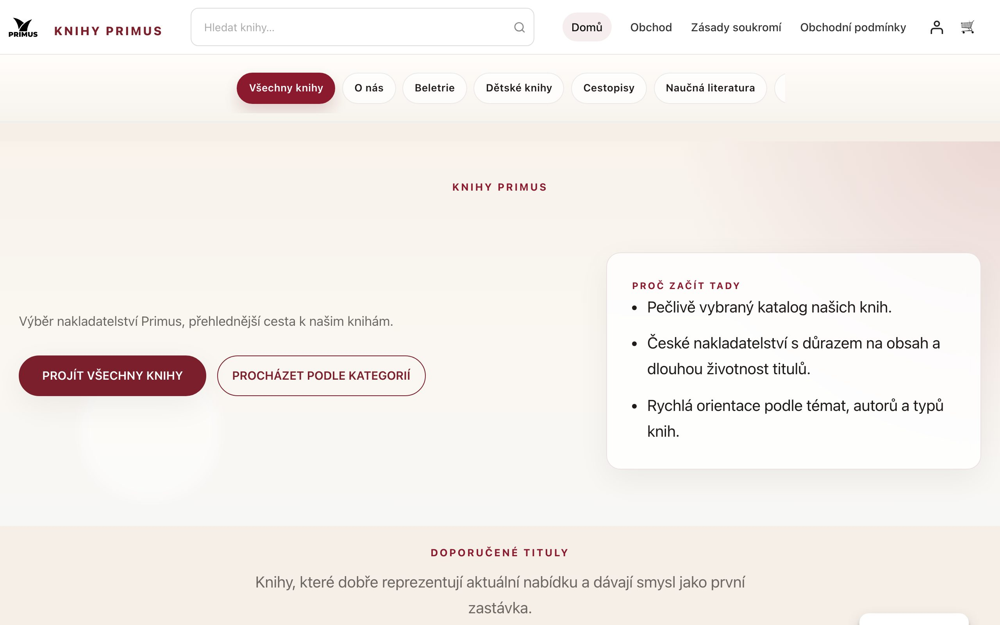

nocode 23
Od promptu ke spuštěnému produktu.
Aplikace · Weby · E-shopy
Co jsem postavil


Záznam kojení, přehled dne a statistiky. Ovládání jednou rukou a data uložená v iPhonu.

Rutiny podle oblastí života, denní cíle a přehled pokroku. Se synchronizací mezi iPhonem a iPadem.

Služby, reference a fotografie z akcí na jednom místě. Web vede návštěvníka k nezávazné poptávce.
Využití AI účtů přímo v menu baru a Docku. S upozorněním před dosažením nastaveného limitu.

Nový vizuál a členění nabídky nakladatelství. Kategorie a doporučené tituly pomáhají s výběrem knih.

Náhled celého e-shopuLaboratoř, ne agentura
nocode23 je osobní laboratoř, kde s pomocí AI stavím aplikace a weby pro každodenní použití. Od prvního nápadu přes návrh rozhraní a kód až po zveřejnění.
Začínám konkrétním problémem: zaznamenat kojení jednou rukou, udržet si návyky nebo mít přehled o limitech AI. Výsledky najdeš v projektech výše — včetně odkazů na hotové weby a aplikace.